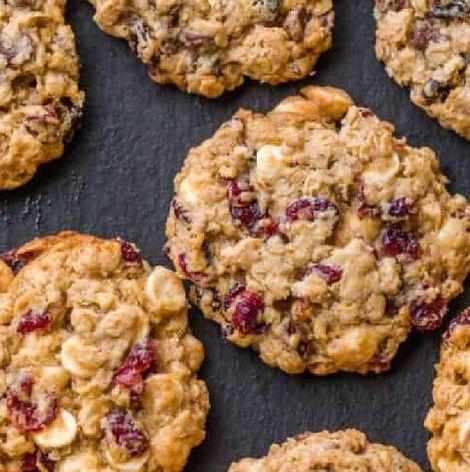
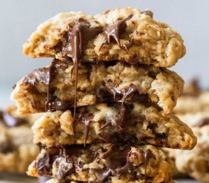

Recipe Research
Slop cookies
You may be wondering why the name of this recipe includes the word 'slop'. It has been observed by my roomates that I seem to have a penchant for homogenous foods, or what they like to refer to as 'slop'. I assure you that these breakfast cookies are a delicious way to start your day, despite the designation they have been given. That being said, since they are a breakfast item, they are less sweet than the traditional cookie. The mix-ins that I usually like (cranberries, coconut and chocolate chips) can be substituted for any other dried fruit, nut, or 'chip'.
ingredients
very ripe bananas
1 tbsp ground flaxseeds + 1 tbsp water
3 tbsp butter, melted
1/4 cup sugar
2 tsp vanilla extract
3/4 cup oat, millet, or other GF flour
3/4 cup rolled oats
1 tsp cinnamon
1 tsp baking powder
1/2 tsp baking soda
1/2 tsp salt
1/4 cup unsweetened coconut flakes
1/2 cup chopped dried cherries or cranberries
1/2 cup dark chocolate chips
instructions
1. Preheat the oven to 350 degrees
2. Combine the ground flaxseeds with the water and allow to gel for 5 minutes.
In a bowl combine the melted butter and sugar and whisk together well. Pour in the vanilla and flax egg and whisk again until fully incorporated.
3. In a separate bowl combine the flour, oats, cinnamon, baking powder, baking soda and salt. Mix together and then pour the dry ingredients into the wet ingredients.
4. With a spatula fold the ingredients together until most of the flour is combined then pour in the coconut flakes, dried fruit and chocolate chips. Fold everything together until you form a sticky dough.
5. Scoop up about 2 tbsp of dough and roll into a dough ball to place on a baking sheet and lightly flatten the dough. Repeat with remaining dough making sure to give enough space for the dough to spread when it bakes.
6. Place the cookies in the oven to bake for 13-18 minutes (until they are lightly browned). Remove from the oven, let the cookies rest on the tray until cooled, then enjoy!
image reference
I am planning to use my own photos, since this is a recipe I make often. These photos are not mine, but I will do something similar.



website reference
epicurious
I really like using epicurious because of the way the recipe search results come up. They are neatly presented with a photo cover, and include a title and rating before you even have to click on the recipe. There are also relatively few ads compared to most recipe websites. There are also lots of filters that you can apply to tailor your search results
king arthur flour
King arthur flour is just one of my favorite brands in general. From their ingredients, to their flagship store (that I have been to many a time in vermont) King arthur flour recipes are the best. They have my favorite chocolate chip cookie recipe of all time. Their website is easy to use, and helpful as it also contains an online for shop for any supplies or ingredients you may need.
half baked harvest
Half baked harvest is my favorite recipe website for cooking (as opposed to baking) They have a wide variety of options, from 'one pot' meals, to weekly meal plans, to specific recipes to cook ahead & freeze, and many other specifications. The website has lots of high-quality photos, and also a little more ad-free than the random blogs or recipe websites you find with a simple google search.
moosylvania
I really like this website, which is for a graphic design firm in st. louis, because of the incorportation of the different icons and animations. It isn't too overwhelming, as those types of websites can be, but is very clean and well executed. I also like that they use a black background and mostly white or light colored text.
123studio
Another graphic design firm (they just have the best websites a lot of the time), 123studio has such a fun layout. I like the way they have incorporated photos as integral parts of the website, and the way the type is all set to the center of the page. I like the idea of experimented with photo layering, especially for a recipe website, where photos can be helpful.
chips
I do believe I have used this website as an example/reference in the past, but just have to put it here again for the recipe project. I love the simplicity of the website, something that I think can often be undervalued on recipe websites. The few colors, basic left align, and particular font choice, all work together well to create a well-put together, easy to navigate site.